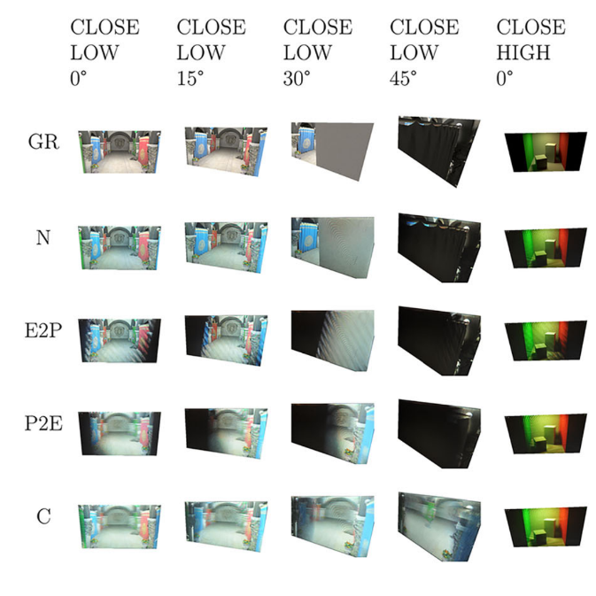

Visual Experience Lab
Assoc Prof Comp Sci NCSU
Visual technology that moves us —
how digital images affect emotion, thinking & behavior
Publications

We have developed a hardware prototype that responds to player or user input in less than 2 ms. It renders pixel-by-pixel rather than frame-by-frame, and orders those pixels randomly. You can play Pong, Tetris or a simple shooting task with it. Published at SID Display Week 2026. (pdf)

We have developed a software technique that drastically improves image quality for lenticular light field displays — with a wider viewing angle, higher resolution, and less ghosting. It works by interactively modeling light flow from pixel through lens to the viewer's eye, and then rendering in real time to match that flow. Interactive viewers consistently prefer our technique. Published at SID Display Week 2025. (doi)
To reduce latency during interaction, we propose scanning display pixels in random rather than top-to-bottom order. This delivers newer information across the display rather than only at the top, and with VSYNC off, exchanges large tears (frame boundaries) for some noise at moving edges. Published at SID Display Week 2025. (doi)